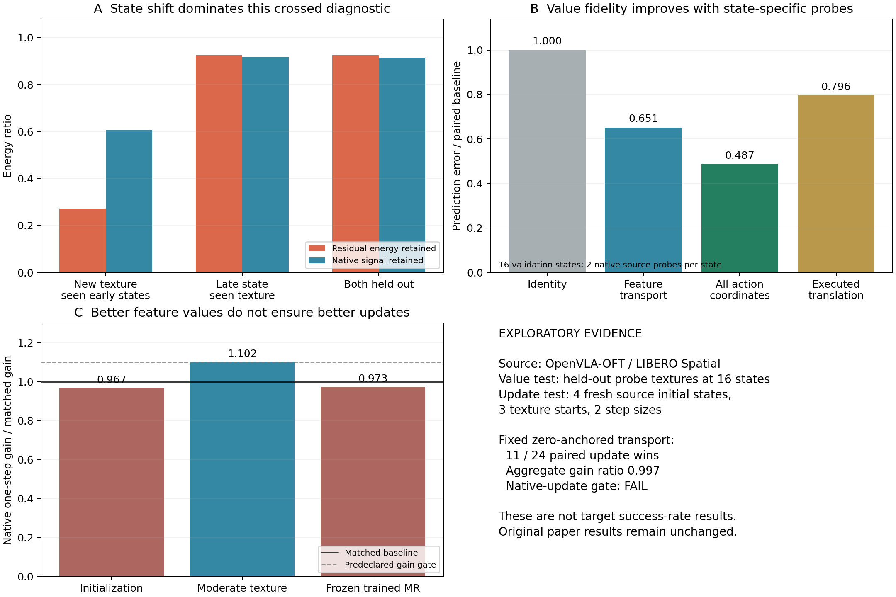
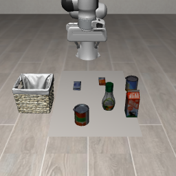
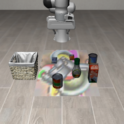
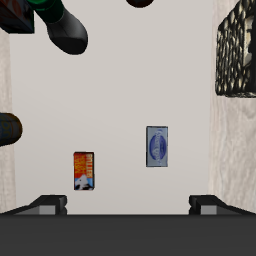
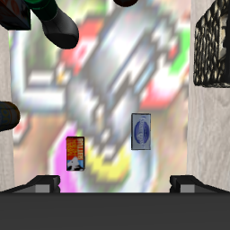
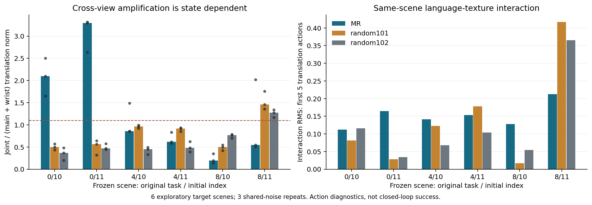

2026年10月31日 · 探索分支 innovation-20261031 · 基线 e94de0b
RefCloth 创新性探索与原生更新验证
当前创新性风险
论文已包含共享背景纹理、双模型迁移、统计匹配随机控制、修正版基线与参考梯度推导。最薄弱的仍是方法增量：共享纹理、动作空间目标、EoT和可微合成已有直接先例。继续增加一个损失项、一个投影层或一个目标模型，很难单独解决这一问题。
可检验的新增贡献应同时回答：现有方法遗漏了什么机制，针对该机制设计为何成立，以及收益能否跨初态、纹理种子和目标策略保留。以下探索将“值预测正确”和“优化方向有效”分开验收。
状态变化与纹理变化的交叉诊断
旧 fit 数据的24状态×12纹理被预先划为96个校准对、96个仅纹理留出对、48个较晚状态留出对和48个双留出对。早期状态定义为step≤45，校准纹理为各幅度与频率组的奇数种子。由于状态划分同时改变时间阶段，结果不能唯一归因于一般状态差异。
| 交叉条件 | 残差保留 q_err | 原生信号保留 q_signal |
|---|---|---|
| 相同早期状态，未见纹理 | 0.2726 | 0.6072 |
| 较晚状态，校准纹理 | 0.9248 | 0.9170 |
| 较晚状态，未见纹理 | 0.9252 | 0.9139 |
表中使用秩64。相同状态下仍能解释较多未见纹理残差，但也移除了大量原生信号；较晚状态上的保留率接近1。它支持检查状态条件性，而不支持“不存在任何低维结构”的普遍判断。原来的 locked_test 未被消费。
从删除残差到传输位移
新候选使用同一状态的少量源模型原生探针，拟合从合成位移到原生位移的低秩修正；它保留未校准方向上的恒等映射，不再直接删除一个全局子空间。设探针行矩阵为R、N，查询位移为d：
d̂N = d + d Rᵀ (R Rᵀ + λI)⁻¹ (N − R)
该最小范数/岭回归形式本身是标准线性代数，不作为新数学定理。此处的研究假设是：源侧、逐状态的原生校准是否能支持更忠实的纹理更新。验证状态每个使用两张探针纹理，再在另外两张纹理上测试；这有额外源模型开销，不是零校准泛化。
| 验证指标 | 基线 | 状态条件校准 |
|---|---|---|
| 相对特征预测MSE | 1.0000 | 0.6514 |
| 位移方向余弦 | 0.4329 | 0.6207 |
| 相对动作预测MSE | 1.0000 | 0.4866 |
| 前五执行动作的相对平移MSE | 1.0000 | 0.7959 |
动作头使用实际生产检查点、bf16权重及上游三个类的原始定义，严格加载全部参数。A/A前向误差为0；24个已有校准状态和16个验证状态中，动作误差分别有24/24和15/16改善。平移坐标收益明显小于汇总动作收益，应完整报告。
决定是否训练的原生更新门
在四个源任务的全新初态索引3上，使用初始化、中幅度纹理和冻结正式MR纹理三个起点，比较0.01和0.05两种实际投影步长。每个导出的真实PNG均在同一原生模拟器状态上重新注入，并用相同的原生源特征位移目标评分。
固定零锚点校准的总增益比为0.9973，24组比较中赢11组、四任务中赢2个，未过“≥1.1倍且至少75%任务改善”的门。中幅度起点约1.102倍，但初始化和正式纹理分别约0.967、0.973倍；不能只挑中幅度结果。
随后单独预登记当前纹理附近的方向校准，用新初态索引4、同样四任务和三个起点。探针为Matched梯度方向与固定随机正交方向，半径0.05；额外加入原生前向锚点加合成反向的BPDA型对照。
| 起点 | 局部校准/Matched增益 | 局部校准/原生锚点增益 |
|---|---|---|
| 初始化 | 0.6865 | 0.9535 |
| 中幅度纹理 | 0.9906 | 1.0080 |
| 冻结正式MR纹理 | 1.0259 | 0.9884 |
局部方向校准总体相对Matched为0.9896，相对原生锚点为0.9910；均未过门。两次原生实验的A/A特征差均为0。它们只限制所测的一步更新族，不否定所有残差或校准方法，也没有检验闭环任务成功率。

Object输入通路干预
先区分主评测与旧仪表化。主成功率入口 run_eval 对 Object 明确使用 floor_mode=True，将布放到地面；旧 eval_cloth_instrumented.setup_episode 缺少此分派。在没有 table_top 的 Object 场景中，通用射线回退会把少量物体表面识别成平台，六个审计键中出现约0.371米或0.501米高的桌布，也有保留0.005米静态地面的情况。
首轮相机诊断复用了这一遗漏，因此已登记为 legacy instrumentation，不能作为主表物理载体的机制证据。已修复仪表化入口以匹配主评测，并另外提供显式 object_fixed_floor 模式用于固定支撑验收。固定模式使用(0.4,0,0.005)世界坐标；它与主评测的物体质心放置是两个实验身份，不互相替代。
这项证据直接要求复核旧 Object 暴露统计及其解释；不能据此直接否定采用正确 floor 分派的主表成功率。旧记录不覆盖，未伪造新的闭环成功数。
六个预定 task–init 键，使用与主评测相同的 Object floor_mode=True，同一模拟器状态、同一显式推理噪声，四种原生相机输入组合。全部记录如下；它们是动作通路诊断，不是六个完整闭环回合。
| task/init | 主相机变化像素 % | 腕相机变化像素 % | 仅主相机扰动：平移RMSE | 仅腕相机扰动：平移RMSE | 双相机扰动：平移RMSE |
|---|---|---|---|---|---|
| 0/10 | 13.640 | 56.407 | 0.046653 | 0.029401 | 0.190145 |
| 0/11 | 13.623 | 54.225 | 0.043115 | 0.048429 | 0.301868 |
| 4/10 | 13.921 | 55.624 | 0.045674 | 0.035067 | 0.069020 |
| 4/11 | 13.750 | 55.852 | 0.051826 | 0.068408 | 0.073935 |
| 8/10 | 13.234 | 50.250 | 0.061653 | 0.199927 | 0.091334 |
| 8/11 | 12.952 | 58.176 | 0.050426 | 0.071754 | 0.061858 |
图片、预处理后差分、纹理材质使用者、A→B→A像素恢复与A/A动作检查均在 object_path_production.json 和配套截图中。因每个状态均使用显式相同 noise，视角组合的差异不混入独立去噪噪声。
下图是主评测放置方式的一个固定状态快照；只用于确认物理载体和遮挡，不作为完整回合统计。




跨视角交互：强度增加，稳定放大仍未过门
在全部六个原有状态上，对冻结MR和已有统计匹配随机纹理101、102，分别使用三份显式共同推理噪声，共54条完整记录。相机干预仍保持相同状态和指令；所有原始MR/noise0动作精确复现，A/A误差为0。
I_view = a_AA − a_AP − a_PA + a_PP amplification = RMS(a_AA−a_PP) / (RMS(a_AP−a_PP)+RMS(a_PA−a_PP))
以上均只使用前五个执行动作的三个平移坐标。MR交互RMS中位数相对随机101和102分别为3.80倍和4.58倍。但三份噪声中至少两份放大比超过1.1的状态只有2/6，未达到跑前要求的5/6；不能称为普遍的协同放大。
| task/init | MR放大比中位数 | 随机101 | 随机102 |
|---|---|---|---|
| 0/10 | 2.096 | 0.500 | 0.369 |
| 0/11 | 3.297 | 0.564 | 0.466 |
| 4/10 | 0.858 | 0.962 | 0.452 |
| 4/11 | 0.615 | 0.918 | 0.483 |
| 8/10 | 0.195 | 0.498 | 0.769 |
| 8/11 | 0.547 | 1.458 | 1.271 |
此公式是标准交互差分；相机融合攻击、跨视角梯度聚合及扰动交互分析均已有工作。这里可保留的是受控经验线索，尚不能凭它声称新算法或首次发现。三份噪声重复不计作三个独立场景。
同场景有效指令干预
保持图片、机器人状态和显式噪声不变，对比原任务指令与“pick up the salad dressing and place it in the basket”。先逐个检查BDDL：三个场景均确实包含salad_dressing_1。不同任务的物体集合并不相同，所以没有把可能指向缺失物体的指令互换。使用同样两张冻结随机对照，完整报告6状态×3噪声×3纹理的54条差分记录。
I_language = (a_adv,alternative − a_plain,alternative)
− (a_adv,original − a_plain,original)MR语言—纹理交互RMS中位数相对随机101和102分别为1.35倍和1.81倍；状态中位数超过两种随机对照的为3/6。跑前探索筛选结果为未通过。
| task/init | Plain指令响应RMS | MR语言—纹理交互RMS | 随机101 | 随机102 |
|---|---|---|---|---|
| 0/10 | 0.04853 | 0.11202 | 0.08145 | 0.11557 |
| 0/11 | 0.09415 | 0.16449 | 0.02848 | 0.03443 |
| 4/10 | 0.13189 | 0.14097 | 0.12228 | 0.06765 |
| 4/11 | 0.13282 | 0.15362 | 0.17765 | 0.10391 |
| 8/10 | 0.09759 | 0.12757 | 0.01707 | 0.05447 |
| 8/11 | 0.15196 | 0.21250 | 0.41672 | 0.36559 |
动作对指令有响应，不等于正确执行了指令。替代目标的Plain闭环能力尚未验证；也没有测出“只破坏一个指令而保护另一个”的任务成功率。本轮未训练或据目标侧结果选择任何纹理。六个目标状态已作为探索数据登记，后续新方法不能再把它们当作未触碰的目标测试集。

对论文与下一轮的建议
当前不把两版校准方法加入主方法。这些结果可作为作者内部探索材料；如附录记录，只需给出候选范围、预算和停止结果。不能把负结果写成Matched已经最优，也不能宣称创新性评分已提高。
本轮已把实际输入变化、相机通路和同场景指令交互分开检查。当前证据不足以把“普遍跨视角放大”或“语言特异劫持”加入论文贡献。相机交互强度的对照差异可保留为下一轮线索；“同一固定背景是否能够按指令语义选择性地改变行为，同时保持其他指令的能力”则仍缺少稳定支持。两者均必须与既有分类选择性UAP、CoT劫持、VLA语言敏感性和多视角攻击工作区分，不能仅把触发/保护两项损失相加后换名。
若继续方法探索，建议先检验一个更明确的假设：能否在源侧学习同一张物理纹理，使单一路相机受扰时行为接近Plain，只有双路共同受扰时稳定失效。这要求单视角保护约束、联合行为端点、统计匹配随机对照，以及原Matched和直接动作损失基线；不应把已有的多视角梯度求和重新命名。此处只给出可证伪问题，本轮没有实现或验证该新优化器。AP/PA相机混合是诊断干预，实际物理部署仍只能用AA同一张纹理。
该方向下一道门应先验证Plain在同一场景对两种有效目标均有闭环能力，并分别用相应物体是否进入篮子的谓词判断，不能沿用原任务的单一成功谓词。随后在源侧预定触发与保护条件，固定阈值和纹理种子，最后才做跨模型闭环。改变场景和指令同时发生的任务ID分组，不能证明语言条件性。源侧方法必须在未使用这些目标探索状态的情况下选择，且比较原Matched、直接动作损失和统计匹配随机纹理。
已知应修正的稿件位置：sec/1_intro.tex 中“Object约1.5%”及motivation_exposure图、sec/X_suppl.tex 对旧Object暴露的解释，需要在重采旧60个Object暴露回合后更新，或先撤去该数值和解释。当前六个早期快照记录的是PNG变化像素比例，与完整回合的布面mask中位数不是同一统计量，不能直接替换。主表成功率与其原始评测入口保持独立审计。
代码、验收与保留范围
修改前两台服务器均与GitHub residual-explore的e94de0b对齐，探索代码独立分支保存。旧判门已修复：空组不自动淘汰，分组下界只检查信号保留；对29个历史候选重新判定仍为0个通过，旧结果文件未覆盖。已有8项CPU/CUDA数学与设备/梯度检查通过。
只使用4090的GPU0，未使用GPU4；GPU任务单进程顺序执行。09接收相同分支，不加载新的模型或产生大规模数据。仓库公开状态已由用户明确确认，继续按公开仓库同步；模型、原始特征.pt和视频不进入Git。新增支撑面拒绝动态物体、倾斜平面、碰撞布和桌面场景误用，相关测试与前述诊断合计15项CPU检查通过；另有CUDA设备与反向梯度检查通过。
数据：results/*.json；源码与跑前计划：./；参考文献筛查：literature.json。初次梯度运行的设备错误已单独隔离；修复后补充了CUDA设备和梯度测试。论文工程RefCloth_Closure_20261031未被改写。
直接核对的主要文献
- Tex3D: Objects as Attack Surfaces via Adversarial 3D Textures for Vision-Language-Action Models
Differentiable scene compositing, object textures, trajectory-aware frame prioritization and vertex parameterization. These components are inherited baselines, not new RefCloth contributions.
- UniTexture: Cross-Task Universal Adversarial Textures for Vision-Language-Action Models
A shared object-bound texture, joint task optimization, native action-space targets and cross-model evaluation. A universal texture or adding an action loss alone does not establish a distinct contribution.
- TRAP: Hijacking VLA CoT-Reasoning via Adversarial Patches
Physical visual patches can hijack intermediate reasoning in CoT-based policies. A background carrier alone is not a sufficient novelty claim; current non-CoT scope must remain explicit.
- Black-Box Adversarial Patch Attacks on VLAs via Ancestor VLM Exploitation
Ancestor-only visual and instruction-grounding attacks, and model-dependent limits of inherited transfer. Moving feature losses to an ancestor or combining vision/language terms is already occupied.
- Across Viewpoints and Time: Trajectory-Generalizable Physical Attacks on World Models and Video Understanding Models
A printable texture with trajectory-aware representation alignment and task refinement for video and world models. Generic temporal alignment or shared adversarial embedding is not a strong standalone novelty direction.
- Causal Analysis of Robot Foundation Models Enables Efficiency Gains
Activation interventions identify a limited action-conditioning interface; representation changes are not automatically causal action changes. Feature-fidelity gains require decoder and native-update validation, not only cosine or MSE.
- Synthesizing Robust Adversarial Examples
Expectation over transformations and physical 3D adversarial optimization. EoT and basic texture-to-image differentiability are established foundations.
- Obfuscated Gradients Give a False Sense of Security: Circumventing Defenses to Adversarial Examples
BPDA is an established method for using a surrogate backward path with an actual forward computation. The native-anchor control and generic surrogate-backward construction are not claimed as new algorithms.
- Does Adversarial Training Improve Generalization in Multi-View VLAs? Revealing and Mitigating View Collapse
View interventions distinguish robust perception from reduced reliance on a view. A camera-dependence observation alone is not a new VLA fusion mechanism.
- CD-UAP: Class Discriminative Universal Adversarial Perturbation
Selective universal perturbations with limited collateral effects already exist for classifiers. An instruction-selective VLA extension needs task-grounding and closed-loop evidence beyond adding attack and preservation losses.
- Fool the Hydra: Adversarial Attacks against Multi-view Object Detection Systems
A single shared patch aggregates gradients from calibrated views; a separate attack disrupts transformer attention. Joint multi-view optimization and gradient aggregation alone are established, not a new RefCloth algorithm.
- Adversarial Attacks for Multi-view Deep Models
Two-stage single-view transfer and end-to-end multi-view attacks were studied in 2020. The broad multi-view attack setting is not new.
- Interpreting Attributions and Interactions of Adversarial Attacks
Game-theoretic attribution and interaction among adversarial perturbations. The inclusion-exclusion interaction formula itself is not a new mathematical contribution.
- Do Vision-Language-Action Models Understand Instructions? A Mechanistic Interpretability Study on Language Grounding
Controlled instruction corruption and activation/attribution patching in pi0.5 and GR00T; sensitivity can vary by language perturbation. A language-sensitivity diagnostic alone is occupied; physically valid same-scene counterfactuals and native behavioral evidence are needed for a distinct background-attack contribution.